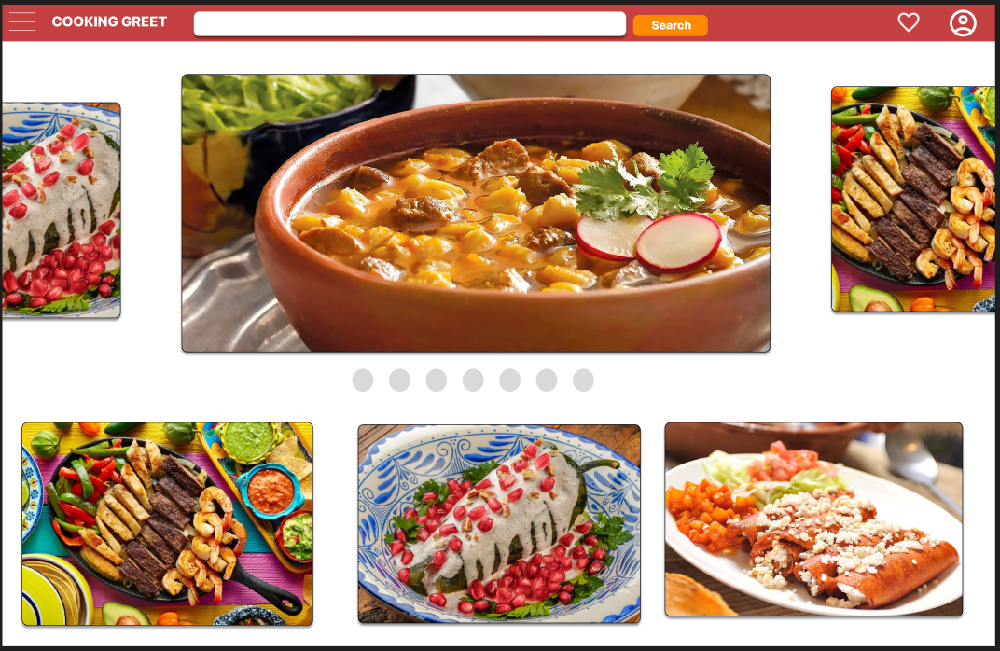
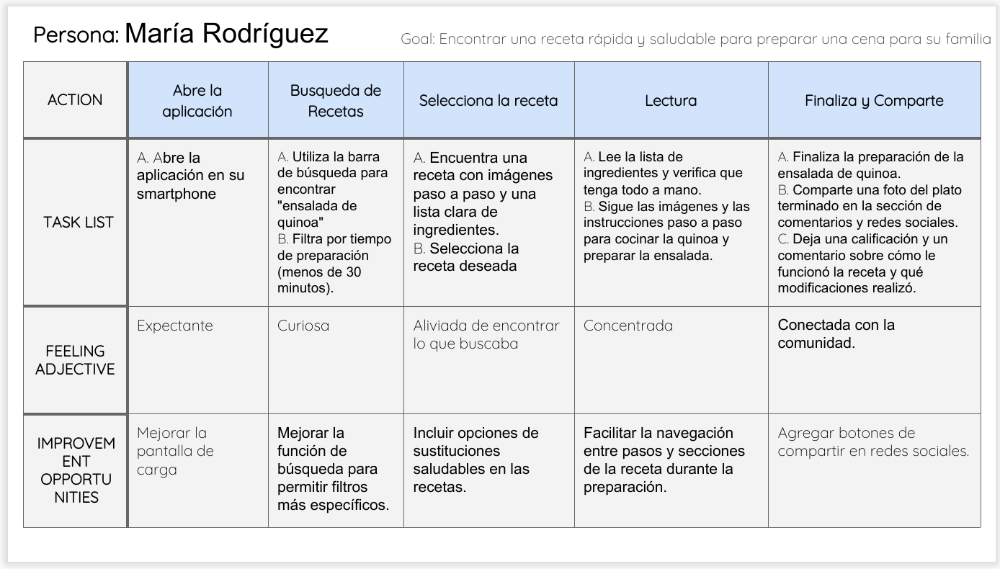
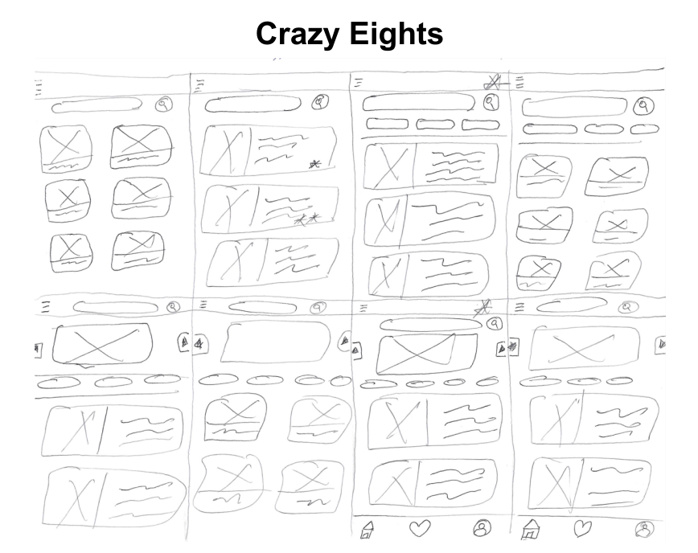
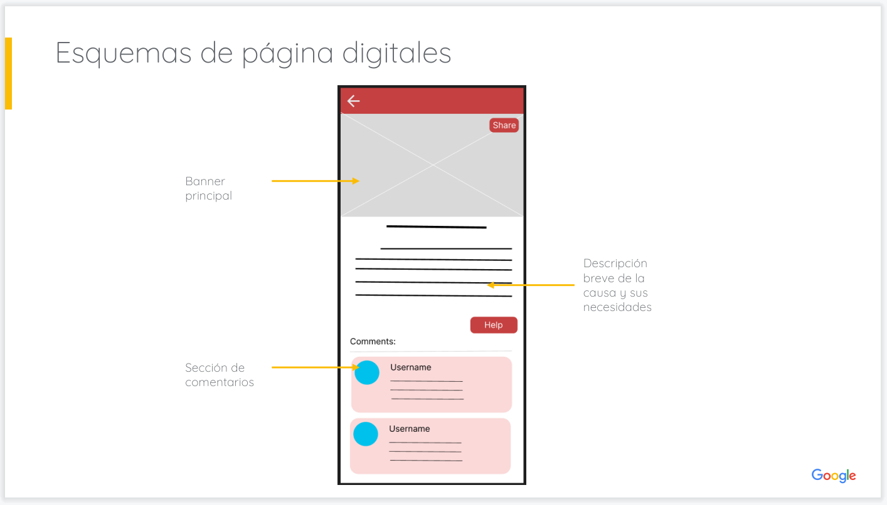
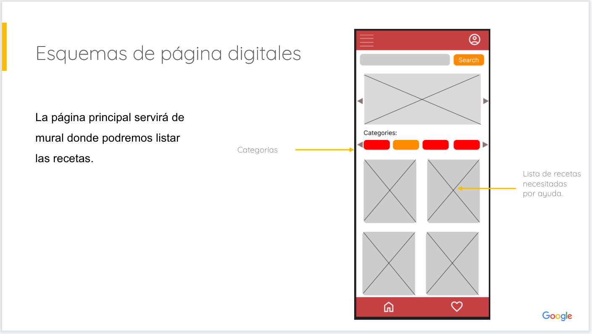
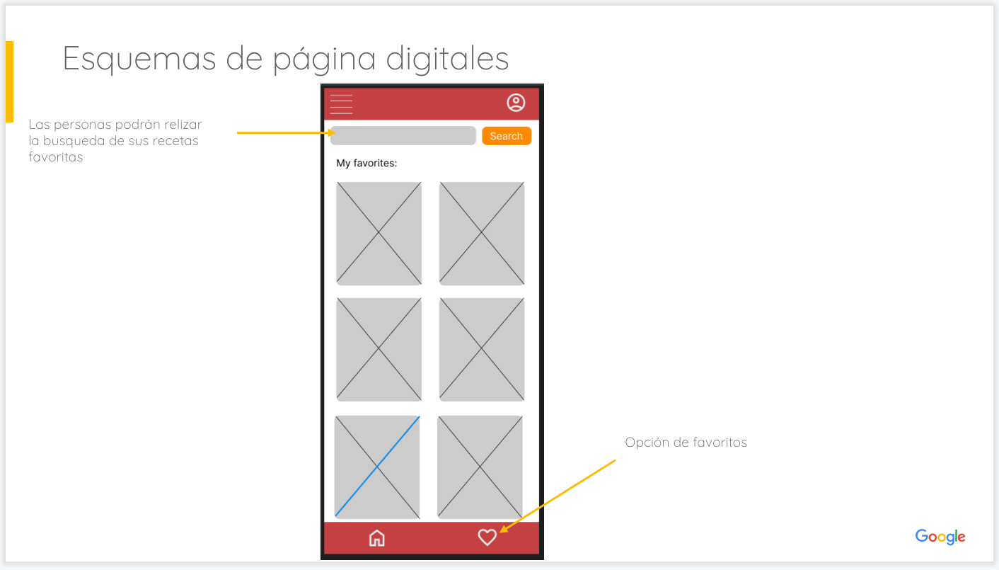
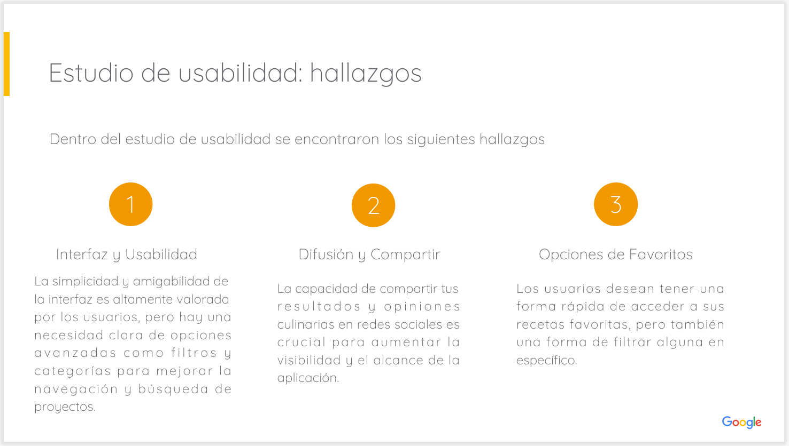
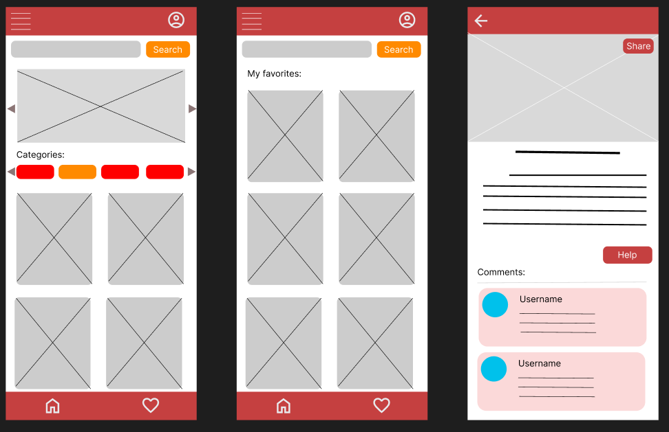
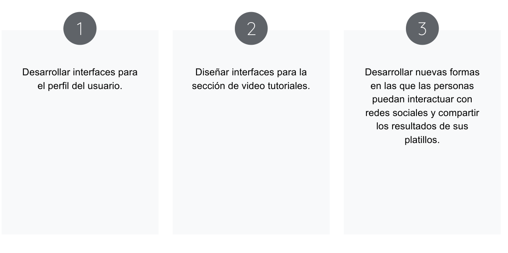

COOKING GREAT

Detalles del Proyecto
COOKING GREAT es un proyecto realizado como parte del 6 curso de diseño Diseño de UX - Google 2024. Tiene como proposito diseñar una aplicación móvil que permita a los interesados en aprender de cocina básica acceder a recetas, guías de cocina y tutoriales.
- Investigación de usuarios
- Creación de esquemas
- Creación de prototipos
- Etcétera.
Desafios: El principal desafío es el diseño de interfaces que permitiera a los usuarios encontrar recetas de forma rápida y sencilla.
Soluciones: COOKING GREAT es una aplicación que permite a los usuarios encontrar recetas de forma rápida y sencilla.
Conociendo al Usuario:
Para realizar el presente proyecto se realizó un estudio de usabilidad y se desarrollo ciertos elementos de apoyo como personas y mapas de recorrido.
Metodología
Tipo de estudio: Estudio de usabilidad sin moderación
Ubicación: Matamoros Tamp, de forma remota (los participantes realizarán la prueba desde sus casas)
Participantes: 5 Participantes
Día: 25 - 31 junio
Duración: 25 - 30 minutos
Público Objetivo: Personas entre los 18 a 45 años
Personas:

Recorrido del Usuario:

Comenzar el diseño
Esquemas de página en papel:

Esquemas de páginas digitales:



Maquetas:
Hallazgos y casos de mejora:

Prototipo de Baja Fidelidad
Prototipo de Alta Fidelidad
Proximos Pasos:
Conclusiones:
El proyecto COOKING GREAT es un proyecto que busca acercar a las personas a la cocina básica de una forma sencilla y rápida.